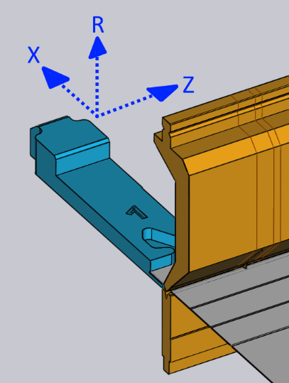
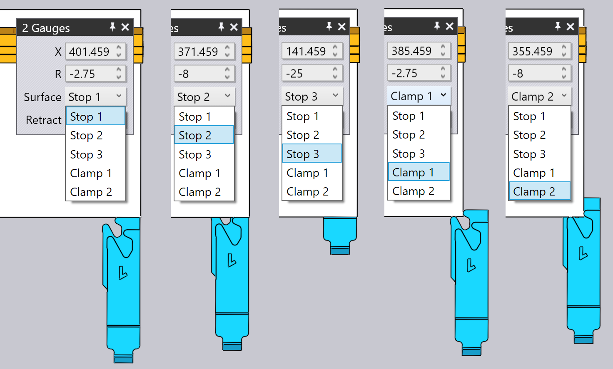

De achteraanslagen bewerken
De achteraanslagposities voor elke buiging kunnen worden aangepast door te klikken op de achteraanslag - dit opent het venster Achteraanslag, dat ernaast wordt getoond.
Het venster Achteraanslag

-
Gebruik de keuzeschakelaar Achteraanslag om de aanslag te selecteren die u wilt bewerken (u kunt ook gewoon op de aanslag klikken en het venster wordt weergegeven om die aanslag te bewerken). Als u met Shift+Klik op de andere aanslag klikt, kunt u de algemene instellingen van beide aanslagen samen bewerken.
-
De Z-, X- en R-invoeren worden gebruikt om de positie van de aanslagen in drie dimensies aan te passen. Voor de meeste kantpersen zijn de assen zoals aangegeven in de afbeelding hieronder:[1]
 -
De keuzeschakelaar Grijppositie wordt gebruikt om een ander oppervlak van de aanslagvinger op het stuk in te schakelen. De set beschikbare oppervlakken is afhankelijk van de machine, en niet alle oppervlakken zijn mogelijk van toepassing op alle buigingen (TecZone Bend informeert u wanneer een bepaald oppervlak niet kan worden gebruikt). De afbeelding hieronder toont verschillende oppervlakken die worden gebruikt:
 -
De instelling Terugslag wordt gebruikt om de terugtrekafstand van de aanslag in te stellen voor het buigen. Voor sommige buigingen moet de aanslag over enige afstand worden ingetrokken (in de +X-richting) nadat het stuk door de stempel is vastgeklemd, maar voordat het wordt gebogen (om een botsing te voorkomen). Deze instelling wordt gebruikt om het intrekafstand te regelen. Wanneer u dit aan het bewerken bent, trekt TecZone Bend de aanslag daadwerkelijk met de opgegeven hoeveelheid in als voorbeeld, zodat u kunt beoordelen of de intrekking voldoende is.
-
Gebruik de knop Automatisch berekenen knop om TecZone Bend te vragen om automatisch een positie te berekenen voor de opgegeven aanslag. In het algemeen heeft TecZone Bend meerdere aanslagmogelijkheden en door herhaaldelijk te klikken op de knop Automatisch plaatsen bladert u door die mogelijkheden. Om terug te keren naar de standaard instelling, sluit u het aanslagvenster, klikt u nogmaals op de aanslag en klikt u vervolgens op Automatisch plaatsen - de eerst geselecteerde positie is dan de standaard instelling (dat zou ook het resultaat zijn van de oorspronkelijke automatische volgorde bepalen en uitrusting).
-
Gebruik de knop Stuk draaien om de andere kant van het stuk in de machine leggen en bereken de aanslag opnieuw. Dit is vergelijkbaar met de knop Stuk spiegelen in het buigvenster.
-
Gebruik de knoppen Terug en Verder om naar de vorige of volgende buiging te gaan en om de aanslagposities van die buiging te bewerken.
Geavanceerd
Hier zijn enkele meer geavanceerde procedures met de aanslagen:
Aanslagen voor meerdere buigingen bewerken
Het is mogelijk om de aanslagposities voor meerdere buigingen tegelijkertijd te bewerken. Selecteer hiervoor eerst meerdere buigingen door Shift+klik op de buignummers in de buignavigator. Klik vervolgens op een aanslag. De afbeelding hiernaast toont de aanslagposities voor buigingen 1, 2 en 4 die samen worden bewerkt:

In dit voorbeeld gebruiken de buigingen allemaal dezelfde Z-positie voor de aanslag, en het bewerken van deze positie zal de Z-positie voor alle aanslagen aanpassen. De X en R-positiewaarden zijn leeg, omdat ze voor elke buiging anders zijn. U kunt echter een X- of R-waarde invoeren en deze wordt dan toegepast op alle buigingen.
Over het algemeen hoeft u deze functionaliteit zelden te gebruiken. Het aanslagvenster weet wat de beperkingen zijn van een bepaalde kantbank en zal alle vereiste beperkingen afdwingen. De R-posities van de twee aanslagen moeten bijvoorbeeld hetzelfde zijn voor sommige machines (ze hebben geen onafhankelijke R1- en R2-assen) - TecZone Bend zal ervoor zorgen dat wanneer u de R-positie voor één aanslag bewerkt, de andere ook meteen aangepast wordt om te volgen.
Voor sommige machines met 2-assige aanslagsystemen worden de Z-posities van de aanslagen handmatig ingesteld en veranderen meestal niet van buiging naar buiging (omdat dat zou betekenen dat de operator de aanslagen na elke buiging handmatig moet aanpassen). Wanneer voor dergelijke machines de Z-positie voor één buiging is ingesteld, wordt deze op hetzelfde ingesteld voor alle buigingen. De botsingsstatus, aanslag ingeschakeld status enz. worden direct berekend voor alle buigingen, dus het is heel gemakkelijk om gemeenschappelijke Z1- en Z2-posities te vinden die aanvaardbaar zijn voor alle buigingen.
Aanslagen slepen
Hoewel de exacte aanslagposities kunnen worden ingesteld door Z-, X- en R-waarden in te voeren, is het vaak eenvoudiger om de aanslagen te positioneren door ze gewoon in contact met het stuk te slepen.
-
Klik eenmaal om de aanslag te selecteren die u wilt slepen.
-
Klik op de geselecteerde aanslag en sleep om deze te positioneren. Afhankelijk van het gezichtspunt wordt de aanslag langs een horizontaal of verticaal vlak gesleept.
Meestal begint u met de aanslag weg van het stuk en sleept u deze het stuk tot ze elkaar raken. U kunt verder slepen (de aanslag in het stuk duwen), en een draadframe blijft bewegen, maar de werkelijke aanslag stopt wanneer deze het stuk raakt.

De afbeelding hierboven toont dit in werking - we beginnen de aanslag naar de plaat te slepen in de richting die wordt aangegeven door de pijl. Zodra de aanslag de plaat raakt, stopt deze en alleen een draadframe-representatie blijft bewegen (om u te laten zien waar u de aanslag naartoe probeert te slepen). Dit maakt het gemakkelijk om de aanslag zo te positioneren dat deze het stuk gewoon raakt zonder spleten en zonder botsingen.
In deze afbeelding hierboven bekijken we de aanslag vanuit een gezichtspunt dat dicht bij_van boven naar beneden_ ligt. Dus de aanslag beweegt in het XZ-vlak en de R-waarde van de aanslag wordt constant gehouden. Als u de weergave meer naar een weergave vanaf het uiteinde draait, zal de aanslag in het XR-vlak bewegen en de Z-waarde constant zijn.
Klem-snaps tijdens het slepen
Door de aanslag te slepen, is het gemakkelijk om de aanslagen nauwkeurig te positioneren wanneer u een van de oppervlakken van het type Aanslag gebruikt. Wanneer u een van de oppervlakken van het type Klem gebruikt, is dit moeilijker, omdat u beide oppervlakken van een klemvinger tegen het stuk moet vastklikken.
TecZone Bend maakt dit gemakkelijk door automatische snaps te bieden wanneer de aanslag dicht bij een mogelijke klempositie is. Om dit mechanisme te gebruiken, draait u eerst de weergave zo dat u de aanslagen van boven naar beneden ziet. Sleep vervolgens de aanslagen zo dat de hoek die u wilt klemmen past in de buurt van de opening van de vingers:

De afbeelding hierboven toont een klemproces dat wordt uitgevoerd. Terwijl we de aanslagen dicht bij een klempositie slepen, klikken ze in positie op de positie Klem 1 (zie afbeelding hierboven, midden). Door verder te slepen, klikken de aanslagen vervolgens vast in de positie Klem 2 (zie afbeelding hierboven, rechts). Merk op dat de R-waarde van de aanslagen automatisch omhoog of omlaag wordt aangepast als we naar deze verschillende klem-snaps verplaatsen.